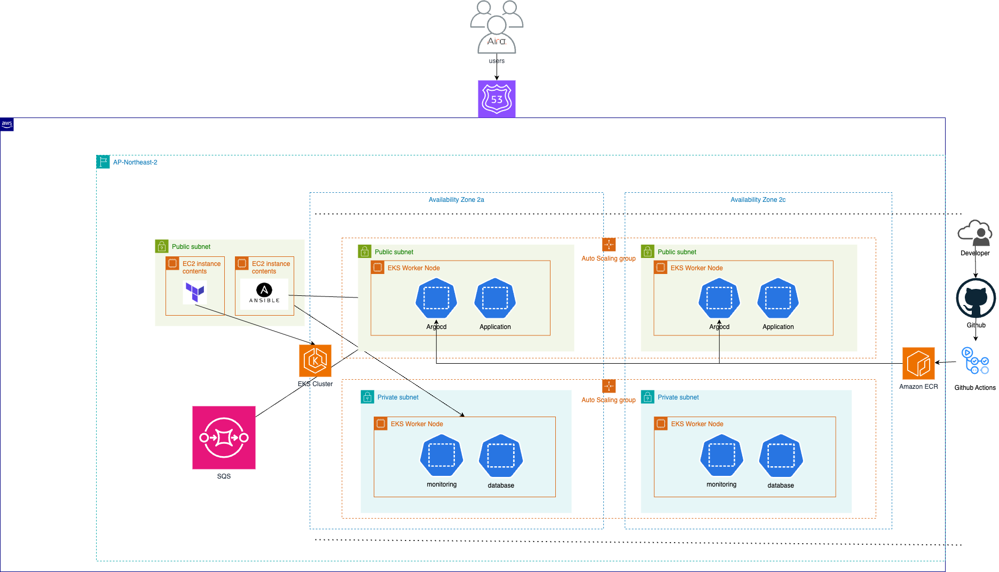
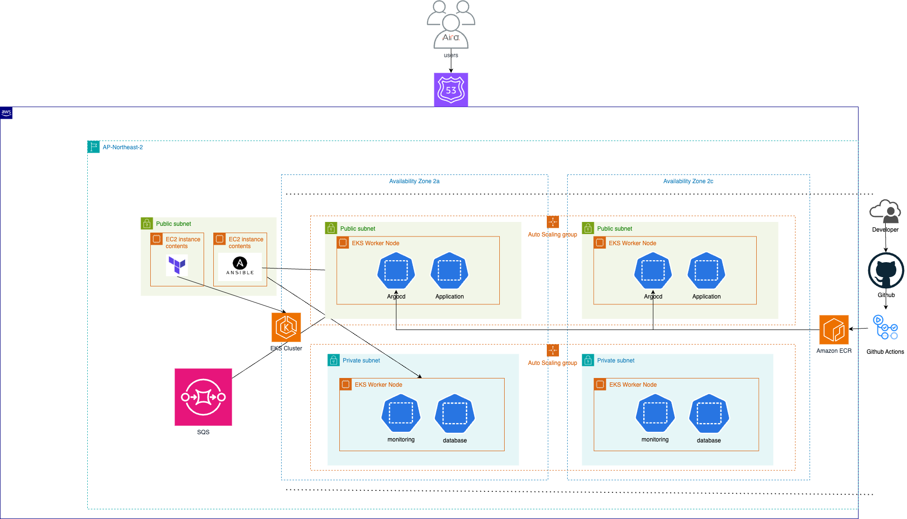

SangA Kim
Cloud Engineer
GitHub | cometokr1@naver.com
Introduction
I will become an engineer who solves complex problems through collaboration and creative thinking, and grow into a valuable member of a diverse and innovative team by continuously taking on new challenges.
The next paragraph has the same phrases, but now they are separated by two spaces and a newline character:
기회가 주어진다면 열심히 하겠습니다!
SkillSet
In addition to the changes in the previous section, certain references are auto-linked:
- Languages: Python, JavaScript
- Frameworks: FastAPI, React Native
- Cloud & DevOps: AWS, Docker, Kubernetes, Terraform, Ansible
- Tools: Git, Prometheus, Grafana, Figma, MySQL
Education
-
03/2020 - 08/2025 (expected)
Bachelor’s degree in Software Engineering at Dankook University
GPA: 3.74 / 4.5 -
03/2023 - 06/2023
Exchange Student at VSB – Technical University of Ostrava, Czech Republic
Faculty of Electrical Engineering & Computer Science -
03/2017 - 02/2020
Graduated from YeongSaeng High School, KR
Language Skills
- English: TOEIC Speaking IH (Intermediate High)
Certification
| Certificate | Organization | Date |
|---|---|---|
| Solutions Architect Associate | AWS | 2024.12.29 |
| SQL Developer Certificate (SQLD) | Korea Data Agency | 2025.03.16 |
| CSTS (Certified Software Test Specialist) | TTA | 2024.03.16 |
Experience
-
01/2024 - 06/2024
Intern
Telecommunications Technology Association, TTA- Worked on QA testing for 5 software projects, including a health app, heating control system, parking management, OCR SDK, and chart library.
Cloud Native Project
클라우드 퍼포먼스 최적화: Aira-1

GitHub 코드 보기 | Google Drive 발표 자료 보기
OpenAI 기반 챗봇 서비스 Aira를 개발하고, EC2 오토스케일링 및 ALB를 활용하여 고가용성과 확장성을 갖춘 클라우드 인프라를 구축했습니다. Prometheus와 Grafana를 이용한 실시간 모니터링 시스템을 구성하고, Locust로 부하 테스트를 진행하여 성능 병목을 분석하고 최적화 방안을 적용했습니다.
What I Used? [AWS, EC2, ALB, Prometheus, ,Grafana, JavaScript, OpenAI API]
자동 오류 감지와 트랜잭션 무결성: Aira-2

GitHub 코드 보기 | Google Drive 발표 자료 보기
1차 프로젝트를 기반으로 유저 인증, 데이터 수집 기능을 추가하고, 클라우드 아키텍처를 ECS Fargate 기반의 서버리스 구조로 전면 개편했습니다. GitHub Actions를 통한 CI/CD 파이프라인과 ESLint, flake8으로 코드 품질 검사를 자동화하였고, Prometheus와 Grafana, CloudWatch, AlertManager를 활용해 서비스 전반에 대한 모니터링 및 장애 알림 시스템을 구축했습니다.
FIFO Queue 및 DLQ 기반의 트랜잭션 무결성 보장 전략을 도입하고, Locust로 다양한 케이스의 부하 테스트를 수행해 1400명 이상까지 안정적인 동시접속을 검증했습니다. ECS + ALB 조합과 VPC 엔드포인트를 통해 인프라 비용을 절감하고, 운영 자동화를 통해 유지보수 오버헤드를 크게 줄였습니다.
What I Used? [ECS Fargate, ALB, ECR, Route 53, CloudFront, S3, CloudWatch, Locust, SQS, FIFO Queue, GitHub Actions]
IaaS 클라우드 운영 자동화: Aira-3

 

EC2 기반 OpenAI 챗봇 서비스를 Auto Scaling, ALB를 통해 무중단 운영하도록 구성하고,
Prometheus와 Grafana로 리소스를 실시간 모니터링하여 이상 징후에 선제 대응.
Locust를 활용한 부하 테스트로 HPA(Pod Auto Scaling) 기능 검증.
또한 Terraform과 Ansible로 EKS 인프라를 코드로 관리하고, ArgoCD를 통한 GitOps CD 파이프라인 구축.
SQS 기반 메시지 큐 처리, CronJob 백업 자동화 등 실사용 기준의 운영 자동화 실현.
What I Used? [ArgoCD, Terraform, Ansible, SQS, CronJob]
Projects
Petogether
가족 구성원 모두가 강아지의 추억, 건강, 산책, 접종을 함께 기록하고 관리할 수 있는 올인원 모바일 다이어리 앱입니다. React Native(Expo)로 모바일 UI를 구현하고, FastAPI 기반 백엔드를 MySQL 데이터베이스와 연동해 개발했습니다.
What I Used? [React Native, FastAPI, MySQL, Git]
쫑알쫑알(ZZongalZZongal) - In progress
GitHub 코드 보기 | Google Drive 발표 자료 보기
어린이가 AI 챗봇과 대화를 나누며 직접 동화를 만들어보는 스토리텔링 앱입니다. React Native로 모바일 UI를, ElevenLabs 음성 합성 API로 내레이션을 구현했고, FastAPI / OpenAI API 기반 백엔드를 AWS ECS Fargate에 배포하여 안정성과 확장성을 확보했습니다.
What I Used? [React Native, OpenAI API, ALB, RDS, S3, Github Actions]
Contact
Email: cometokr1@naver.com
Phone: +82-10-1234-5678
LinkedIn: SangA Kim
GitHub: tkddk0108